Stockholm z lodi
Publikováno 5. 6. 2018 (21:13) v kategorii Tipy pro turisty • Autor Knut Holm • Přečtete za 13 minut
„Každá pátá rodina má svou vlastní loď.“ Tato obyčejná věta z nádherného dokumentu Švédsko, kouzlo severu mi v podstatě změnila život, protože odstartovala mou vášeň a lásku k severskému království. Lodě miluji, a přestože dokáži jen stěží popsat slovy pocity, které mám, když jsem na palubě, pokusím se vám tímto článkem zjednodušit cestu k vašemu vlastnímu zážitku a pomoci vám objevovat Stockholm trochu netradičně – z lodi.
Na lodi jako Švéd
Přestože bývá Finsko často označováno za zemi tisíce jezer, pravdou je, že ve Švédsku se nachází jezer ještě více než na území jeho východního souseda. Přidejte k tomu poměrně dlouhé pobřeží, které navíc lemují tisíce ostrovů a švédskou lásku k přírodě a pochopíte, proč je právě tato země rájem pro nejrůznější plavidla.
Vlastnictví lodě je pro některé obyvatele zdroj zábavy, pro jiné nepostradatelný dopravní prostředek a pro mnohé z nich obojí. Plachetnice jsou zde ve srovnání s Českou republikou výrazně levnější a díky vyšší kupní síle samozřejmě i dostupnější. Při návštěvě Švédska je tak uvidíte naprosto všude – každá větší vodní plocha, kde alespoň občas vane příznivý vítr, je vhodná na plachtění. Sezóna je zde o měsíc až dva kratší než v ČR, proto je v létě třeba využít každou volnou chvíli a strávit ji na své milované lodi.
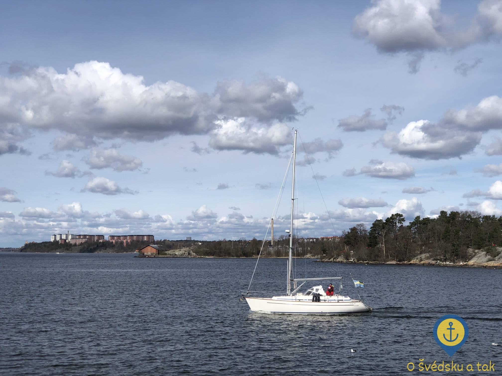 Švédové lodě milují a plachtění je oblíbená volnočasová aktivita
Pokud je Švédsko zemí pro provoz lodí naprosto typickou, pak mu jde jeho hlavní město příkladem. Stockholm, kterému se často přezdívá Kráska na vodě nebo Benátky severu, nedostal svá přízviska náhodou – rozkládá se na čtrnácti ostrovech, a tak vás zcela přirozeně přitahuje na palubu.
A není to pouze Stockholm sám, ale také jeho souostroví, které je zároveň největším souostrovím celého Švédska. Kolem hlavního města se rozprostírá na 24 tisíc ostrovů a ostrůvků, z nichž většina je obydlených a tedy posetých nádhernými typicky červenými domečky. Život na ostrově má svá specifika, přičemž tím nejzásadnějším samozřejmě je, že pokud pomineme těch několik málo ostrovů, které jsou spojené s pevninou mosty nebo na kterých se nacházejí heliporty, dopravu tam zajišťují výhradně lodě. Většina lidí žijících na ostrovech tedy vlastní loď a naopak nevlastní auto, protože na většině ostrovů je provoz aut zakázán. Naopak na ty ostrovy, kde se auta provozovat smí, se velmi pohodlně dostanete přívozem, kterému se švédsky říká linfärja.
 Pokud bydlíte na ostrově, je vlastnictví lodě nutností
Pokud bydlíte na ostrově, je vlastnictví lodě nutností
Na lodi jako turista: Společnost Strömma
Při plánování své dovolené ve Stockholmu narazíte na nabídku lodních atrakcí pro turisty poměrně brzy – většinou se bude jednat o vyhlídkové plavby nabízené v rámci Stockholm Passu. Většinu z nich zajišťuje společnost Strömma a zakoupit je můžete i samostatně. Nabídka je velmi rozsáhlá a určitě si z ní vybere každý.
Přestože se jedná o skvělou příležitost, jak objevovat Stockholm z lodi, připravte se na vyšší ceny a mnoho lidí na palubě namačkaných u oken, aby měli co nejlepší výhled. Plusem naopak je poměrně obsáhlý, zajímavý a vtipný výklad průvodce dostupný v angličtině.
Poněkud netypickým zážitkem je Stockholm Winter Tour, tedy vyhlídková plavba v zimě. Tyto plavby jsou realizovány na lodích s venkovní palubou, kde se nachází mnoho kožešin a dek, které slouží k tomu, aby se vám všudypřítomný mráz dostával pod kůži trochu pomaleji.
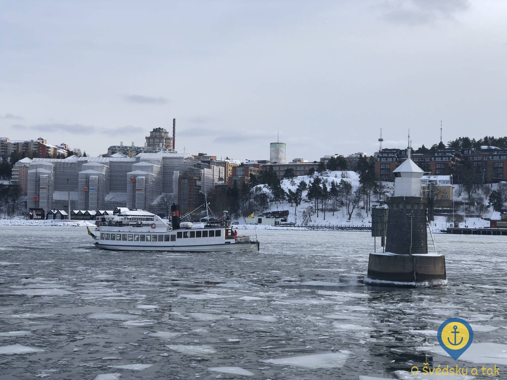 Loď společnosti Strömma na Stockholm Winter Tour – na horní palubě mrzne pár odvážných turistů
Na horní palubě fouká ledový vítr, loď si láme cestu zamrzlým mořem a zima je, jako když praští. Jistě vás tedy asi nepřekvapí, že na venkovní palubě většinou moc lidí není a vy tak máte nádherně mrazivý výhled téměř sami pro sebe. Jakmile promrznete dostatečně, máte možnost schovat se na chvíli dovnitř a ohřát se u hrnku kávy nebo něčeho ostřejšího.
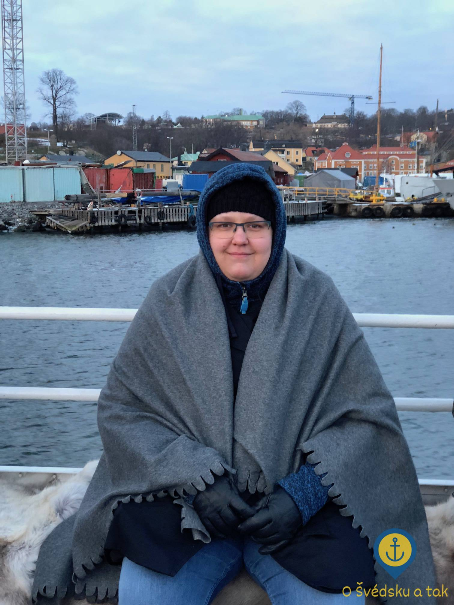 Pokud se rozhodnete Stockholm Winter Tour strávit na horní palubě, vezměte si teplé oblečení a připravte se na pořádnou zimu – stojí to ale za to
Společnost Strömma realizuje mnoho dalších vyhlídkových plaveb i výletů po celý rok, osobně mohu doporučit například celodenní výlet na ostrov Björkö, kde se kdysi nacházelo nejstarší švédské město a původní vikinská osada Birka. Krásný je také výlet na ostrov Vaxholm, který je považován za hlavní město Stockholmského souostroví. Mnoho dalších tipů na plavby naleznete také v již zmiňovaném Stockholm Passu, což je zároveň i levnější varianta těchto zážitků, pokud se jich při vaší návštěvě Stockholmu rozhodnete podniknout více.
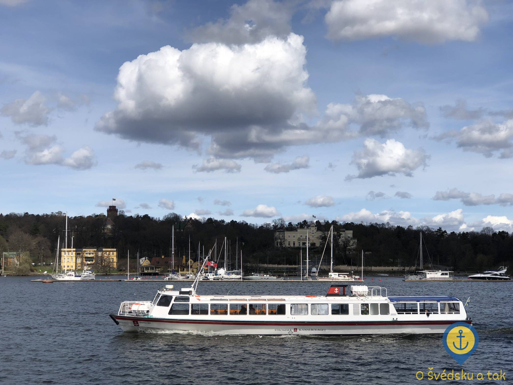 Společnost Strömma pořádá mnoho vyhlídkových i výletních plaveb po celý rok
Na lodi s MHD: Společnost SL
Jak už víte, město Stockholm se rozkládá na čtrnácti ostrovech. Nejspíše pro vás tedy nebude již tak překvapující informací, že součástí linek městské hromadné dopravy je i několik linek lodních (mapy linek jsou dostupné zde). V závislosti na délce vaší návštěvy si tedy můžete zakoupit časovou jízdenku MHD na 1, 3 nebo 7 dní a v rámci této jízdenky můžete využívat veškeré MHD lodní linky (švédsky pendelbåt) bez dalších poplatků. MHD ve Stockholmu realizuje společnost SL, což je zkratka z názvu Storstockholms Lokaltrafik. Informace o cenách můžete najít zde.
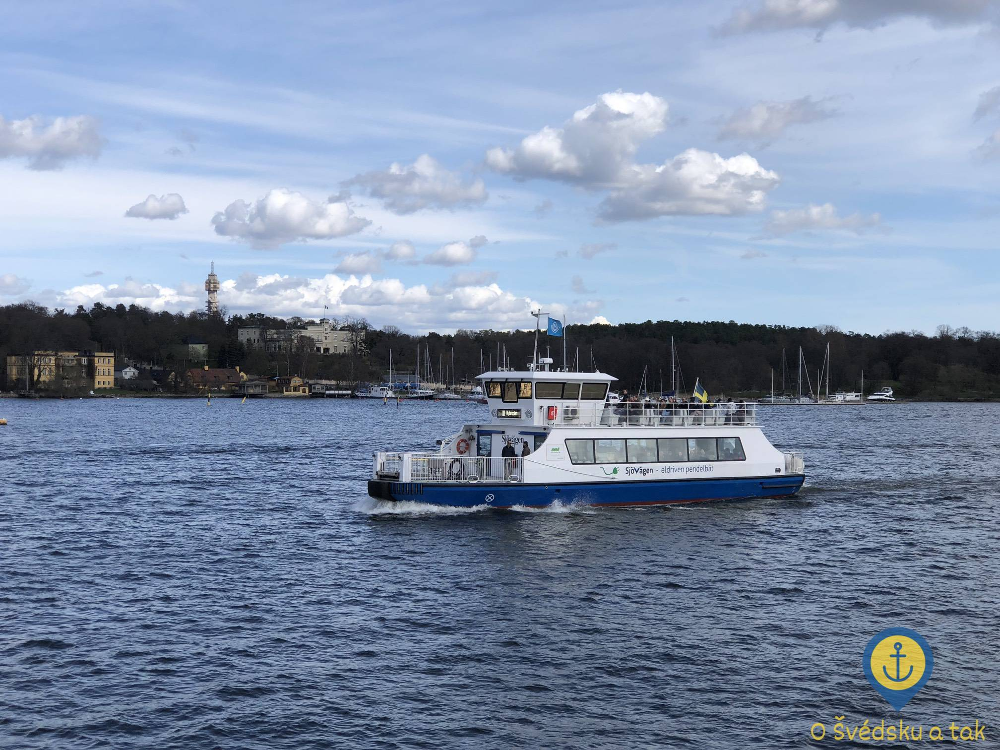 Stockholmský dopravní podnik provozuje i lodní linky, kterými se můžete svézt v rámci běžného tarifu MHD
Trasu, ze které uvidíte nejzajímavější místa a objekty ve městě, realizuje lodní linka 80. Na loď můžete nastoupit v centru města a nechat se svézt po téměř totožné trase, po které by vás svezly vyhlídkové lodě, ovšem za úplně jiné peníze. Výhodou také je, že příliš mnoho turistů o této možnosti neví a na palubě tak většinou narazíte akorát na místní, kterým se pohled za okny dávno okoukal, takže vám klidně své místo u okna přenechají a budou se věnovat knize, mobilnímu telefonu nebo třeba pletení. Pro ně je to prostě jen naprosto všední způsob přepravy do/z práce.
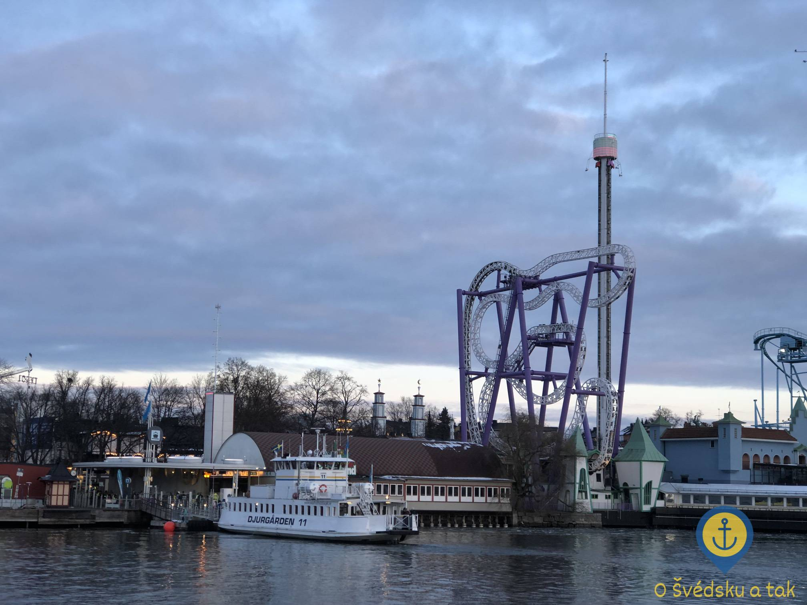 Loď MHD linky 80 v přístavu na ostrově Djurgården
Problém není ani z lodi na zajímavých místech vystoupit, projít se po okolí a počkat na další loď, která pojede za poměrně krátkou dobu. Pozor si dejte akorát na roční období, protože ne všechny lodní linky jsou v provozu celoročně. Tyto informace spolu s informacemi o časech odjezdů jednoduše vyhledáte na hlavní stránce dopravního dopravního podniku. Linky 80 se to ovšem netýká – je hojně využívána i v zimě, takže jakmile moře zamrzne, nasadí na ni dopravní podnik ledoborce a provoz zůstává nepřerušen.
 Když moře zamrzne, musí dopravní podnik nasadit ledoborce
Když moře zamrzne, musí dopravní podnik nasadit ledoborce
Návod k použití lodní hromadné dopravy
Při jízdě MHD ve Stockholmu obecně si dejte pozor ještě na jednu záludnost – veškeré zastávky jsou na znamení. V autobusech to znamená při nástupu mávnout na řidiče a při výstupu zmáčknout tlačítko, na lodích ale tyto postupy nefungují. Pokud chcete vystoupit někde jinde, než na konečné, musíte tuto skutečnost při nástupu oznámit lodní posádce.
Nástup do lodi probíhá tak, že u nástupního můstku vždy stojí obsluha, které můžete sdělit název mola, kde chcete vystupovat. Jízdenky ukazovat nemusíte, obsluha si je zkontroluje později během plavby. Tehdy je také vaše druhá příležitost oznámit svůj záměr vystoupit na určitém mole, může však již být pozdě, protože jste příslušné molo už minuli. Pokud nechce nikdo na loď nastoupit, loď se ke břehu ani nepřiblíží.
Pokud stojíte na mole a čekáte na loď, nesmíte zapomenout zvednout takzvaný signalizační semafor. Jedná se oválnou bílou placku připevněnou na stožár v blízkosti mola. Pokud je semafor neaktivní, placka je ve vodorovné poloze. Semafor aktivujete zatažením za ocelové lanko, čímž dostanete bílou placku do svislé polohy a dáte tím lodi jasně najevo, že hodláte nastoupit. Kapitán při přiblížení se k molu kontroluje polohu semaforu dalekohledem a připluje k molu pouze v případě, že semafor signalizuje, že chce někdo nastoupit. Jakmile je připlouvající loď již těsně u mola, nezapomeňte semafor zase deaktivovat, aby nezmátl další loď – v případě, že na to zapomenete, vyzve vás k tomu před vyplutím posádka lodi. V případě špatné viditelnosti byste měli spolu se semaforem signalizovat úmysl nastoupit ještě světelným signálem (mácháním rukama nad hlavou za použití silného zdroje světla).
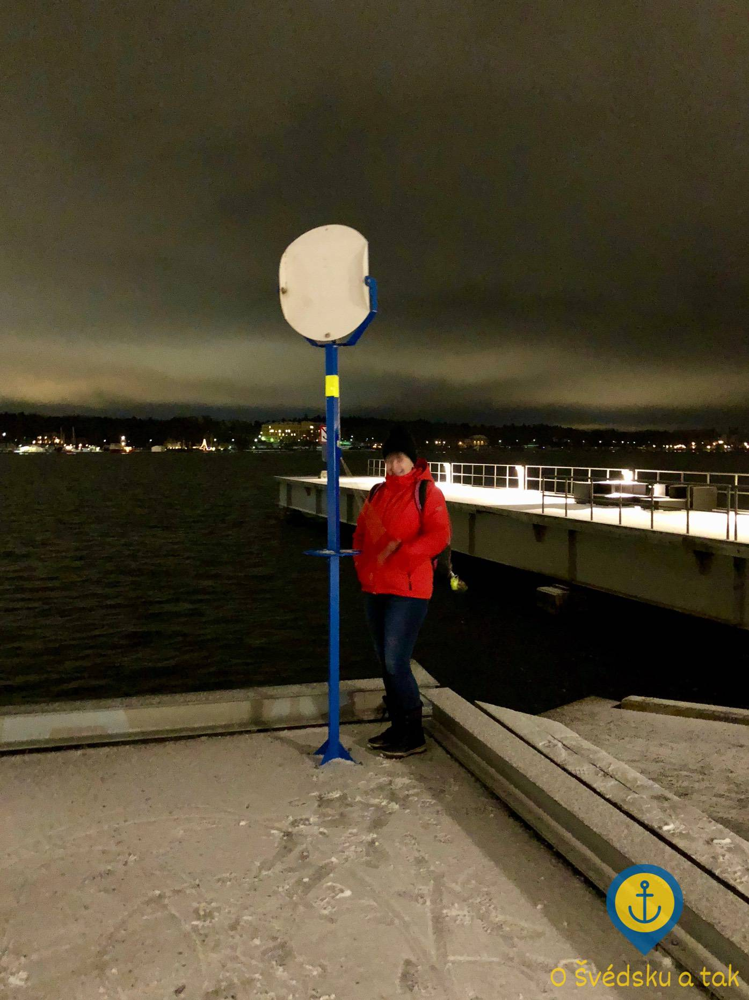 Pokud chcete, aby loď u mola zastavila, nesmíte zapomenout zvednout signalizační semafor
Na lodi na Stockholmské souostroví: Společnost Vaxholmsbolaget
Vaxholm je jeden z 24 tisíc ostrovů Stockholmského souostroví a je pokládán za jeho hlavní město. Není tedy divu, že zrovna od něj odvozuje své jméno společnost, která se živí přepravou lidí mezi pevninou a jednotlivými ostrovy: Vaxholmsbolaget. Celé souostroví je rozdělené na tři jednotlivé oblasti, pro které se vydávají mapy a jízdní řády – jedná se o severní, střední a jižní oblast. Stačí si tedy jen vybrat ostrov, který chcete navštívit, najít v mapě příslušnou linku a hurá na palubu!
Ceny za jednotlivé cesty se liší podle tarifního pásma, kterých je celkem šest, a pohybují se v rozmezí od 47 do 140 SEK, přičemž nejběžnější je cena 79 SEK v tarifu 3, který platí například i ze Stockholmu na Vaxholm. Informace o tarifech naleznete buď na internetu při vyhledávání spojení nebo přímo na palubě lodi. Zaplatit můžete taktéž přímo na lodi a to platební kartou, nejjednodušší je ovšem nabít si volné peníze, tzv. reskassan, na vaši SL kartu a tu poté použít k rychlé platbě. Pokud plánujete využívat lodě během vaší návštěvy více, můžete si pořídit i časovou jízdenku na 5 dní za 445 SEK pro všechna pásma.
U cen ještě chvíli zůstaneme. Protože se dopravní podnik snaží zatraktivnit cestování na ostrovy i mimo hlavní sezónu, běží v jeho dopravních prostředcích na jaře a na podzim velmi populární kampaň, během které se například dovíte, že si máte dávat pozor na mezeru mezi molem a lodí, když z ní vystupujete, což je volná parafráze na proslulé hlášení ve stockholmském metru :-) Zkrátka, společnost Waxholmbolaget se vám snaží ve spolupráci se společností SL sdělit, že ve vedlejší sezóně, což je období zhruba do konce dubna a poté opět zhruba od začátku září, můžete využívat lodě Waxholmbolagetu v rámci běžného tarifu MHD, wow! Ovšem pozor, jako turisté tuto nabídku většinou nevyužijete, protože musíte mít časovou jízdenku alespoň na 30 dní. A pozor podruhé – i období Vánoc je hlavní sezóna.
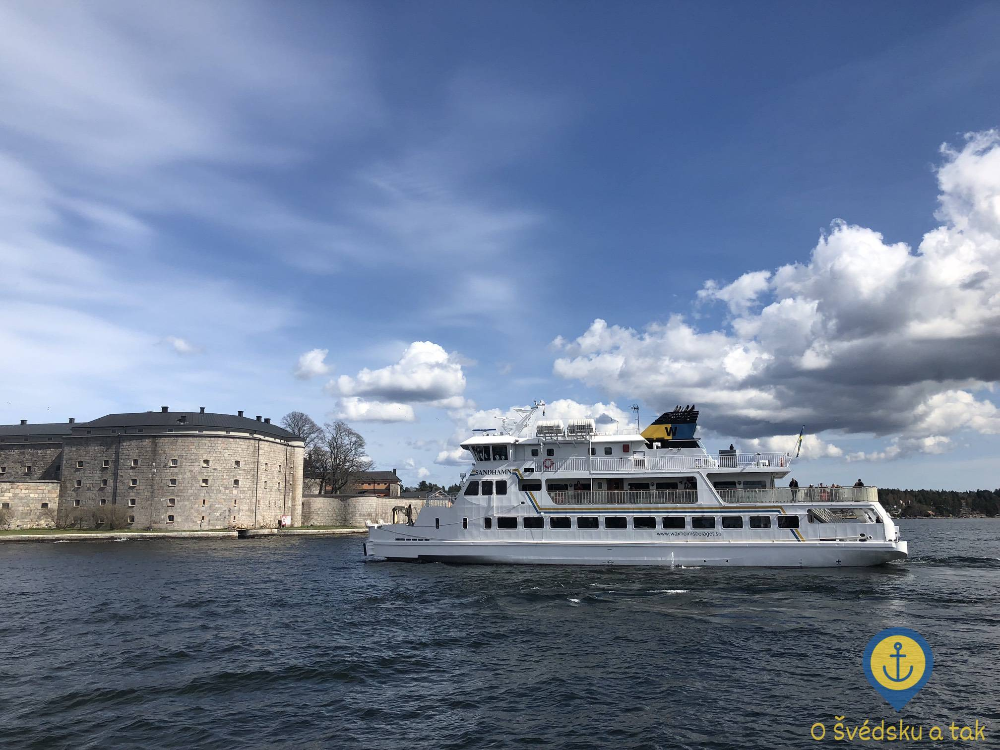 Loď Sandhamn společnosti Vaxholmsbolaget, v pozadí Vaxholm Kastell na ostrově Badholmen
Lodě Vaxholmsbolagetu se liší svou velikostí i komfortem podle toho, na jakou linku jsou nasazeny. Nejvytíženější linky obsluhují moderní a velice komfortní lodě, kde najdete vždy alespoň kavárnu a často i plnohodnotnou restauraci. V klidu si tak můžete sednout na venkovní palubu se šálkem dobré kávy a pozorovat líně ubíhající krajinu i ostatní lodě. Rovněž není nutné příliš pečlivě plánovat svou cestu, protože lodě vyplouvají každou půlhodinu.
To se však nedá říct o linkách, které propojují řídce osídlené ostrovy se švédským venkovem. Tyto lodě mnohdy vyplouvají pouze jednou denně, jsou maličké a kávu si na nich nedáte. Za to kolem sebe uslyšíte všude jen švédštinu, na turisty nenarazíte a o to romantičtější zážitek si z plavby odnesete. Plusem je, že vybavenost vaší lodi předem zjistíte na internetu při vyhledávání spojení, takže víte, do čeho jdete. Záchod se nachází na všech lodích.
Návod k použití lodí je až na platbu totožný s SL loďmi, a to včetně signalizačních semaforů. Platba probíhá na lodi přiložením SL karty ke čtečce a zvolením tarifní taxy. Obdržíte dva žluté papírky, jeden je samotná jízdenka, druhý doklad o zaplacení. Jízdenku odevzdáte při výstupu z lodi nebo si ji od vás ještě při plavbě vybere obsluha, takže nezmuchlat, neztratit.
Ostrovy neobsluhuje pouze společnost Vaxholmsbolaget
Pokud nevíte, kam vyrazit jako první, doporučuji zvolit právě ostrov Vaxholm. Hned po připlutí si všimnete obrovské pevnosti Vaxholm Kastell, o které zanedlouho zjistíte, že se nachází na samostatném ostrově, přestože ji máte takřka na dosah ruky. Velice záhy se tak setkáte s dalším lodním dopravcem Färjerederiet spadající pod Trafikverket, což je švédský dopravní úřad, který mimo jiné například i vydává řidičské průkazy. Tento dopravce provozuje přívozy, tzv. linfärja, po celém Švédsku. Informace o lince na ostrov s pevností naleznete zde.
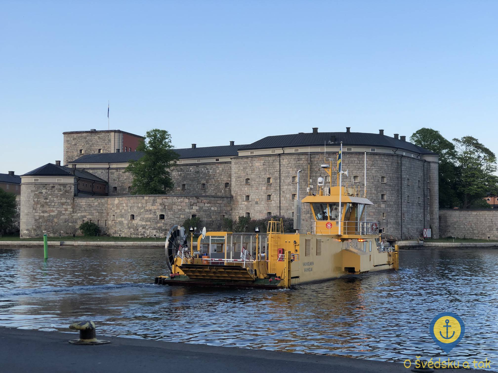 Přívoz (švédsky linfärja) z Vaxholmu na Badholmen jezdí v sezóně každých 15 minut
Vaxholm je ostrovem velice populárním a plavby na něj realizuje celá řada společností, mimo jiné i již v tomto článku zmiňovaná společnost Strömma.
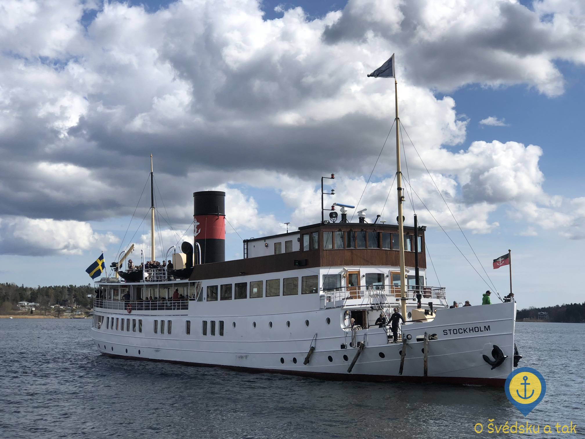 Společnost Strömma pořádá na Vaxholm celodenní výlety s průvodcem
No a pokud stojíte o zážitek zcela mimořádný, můžete využít nabídku jedné z mnoha vodních taxislužeb. Jedná se o dopravu velice rychlou, individuální a privátní, čemuž však odpovídají i ceny.
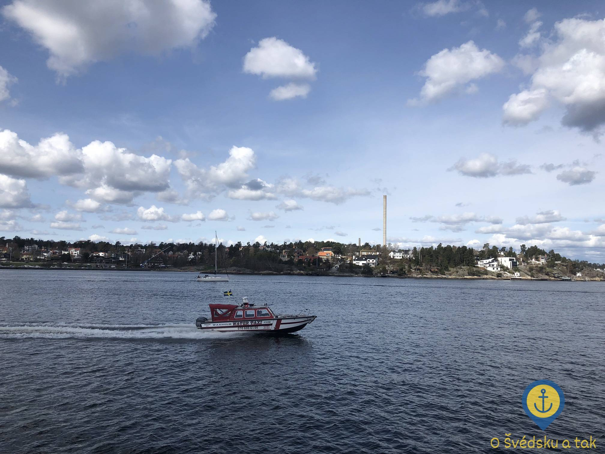 Vodní taxi - za rychlost a soukromí se platí, přes den si na trasu Stockholm ↔ Vaxholm připravte 2300 SEK, v noci 3450 SEK
Na lodi přes Balt: Společnost Viking Line
Cesty na trajektech přes Balt jsem již popisoval ve svém starém článku na webu Sverige.cz a vracet se k tomuto tématu tedy nebudu. Taktéž se nejedná o zážitek vyloženě stockholmský, nicméně trajekty ze Stockholmu vyplouvají a město z nich tak alespoň na začátku plavby můžete pozorovat také :-) Pojďme si tedy něco říct o cenách a o tom, jak se na trajekty dostat.
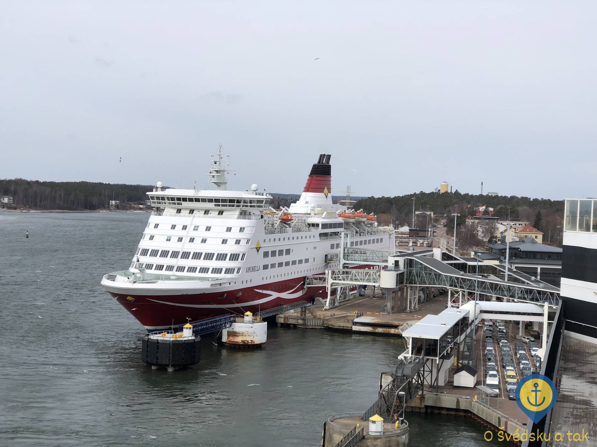 Trajekt Amorella společnosti Viking Line kotví v přístavu na Mariehamnu (Ålandy)
Vaše cesta na palubu vede přes stránky společnosti Viking Line, kde si najdete svou plavbu a zakoupíte palubní lístky. Zde je nutno podotknout, že ať už hledáte vstupenku na legendární party, luxusní zážitek nebo zkrátka jen levný způsob dopravy, z nabídky si vybere každý. Na noční plavby je nutné zakoupit kajutu – v tomto případě platí, že neplatíte cenu za osobu, ale za vybranou kajutu a cestovat v ní může až tolik osob, kolik je v kajutě lůžek.
V případě denních plaveb bez kajuty (kterou si zakoupit můžete, ale nemusíte) platíte pouze symbolickou částku za každou osobu zvlášť. Ani ceny za kajuty však nejsou nikterak vysoké, pokud budete cestovat ve dvou v hlavní sezóně, připravte si zhruba 250 SEK na osobu za zpáteční lístek do Finska. Platí zde podobná politika jako v případě nákupu letenek – lístky kupujte v dostatečném předstihu a zkontrolujte více termínů.
Pokud si chcete dopřát luxusní zážitek a strávit svou cestu v jedné z prémiových kajut, čeká na vás vaše vlastní promenádní paluba a obrovský apartmán včetně vířivky nebo sauny. Není to ani tak drahé, jak by se mohlo zdát, protože ceny jsou srovnatelné s jízdou vodním taxi ze Stockholmu na Vaxholm a pohybují se v řádu několika tisíců švédských korun :-)
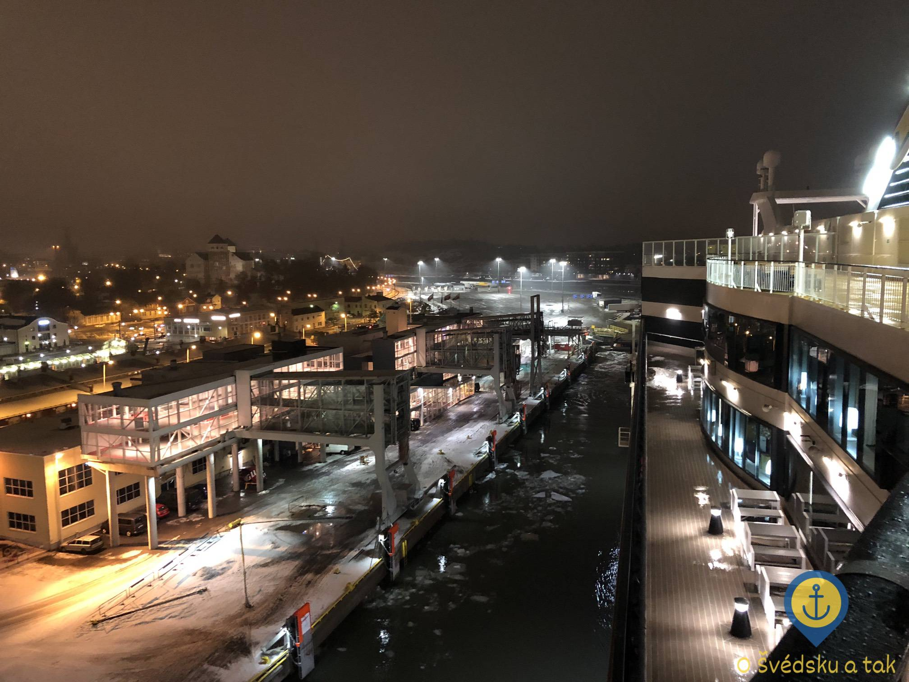 Trajekt Viking Grace společnosti Viking Line vyplouvá z přístavu v Turku - pohled z paluby 12
Ceny za základní jízdné jsou tak velmi nízké z toho důvodu, že to není jízdné, na čem lodní společnost vydělává – hlavní zdroj příjmů představují zisky ze zábavy a prodeje zboží na palubě. Trajekty plují v mezinárodních vodách a vy si tak můžete užívat nákupy v obrovských tax free obchodech, přičemž zakoupené zboží si smíte bez proclení z lodi i odnést, a to až do výše povoleného limitu na váš palubní lístek. Informace o limitech naleznete na palubě trajektu v tax free katalogu, jsou však poměrně benevolentní. Ceny za alkohol jsou na trajektech v porovnání s cenami na pevnině velmi nízké a právě to je důvodem, proč lidé jezdí na trajekty především za zábavou. Pokud tedy hledáte vhodné místo pro seznamování se s domorodci, jste na správné adrese, totiž palubě :-)
Při rezervaci lístku je rovněž dobré vědět, že není trajekt jako trajekt. Pořizovací cena takové lodi je obrovská a její životnost poměrně dlouhá, což je důvodem, proč se flotila nemodernizuje příliš často. Věřte tomu, že je obrovský rozdíl plout na lodi z osmdesátých let oproti lodi staré pouhých pět let. Pokud se tedy vydáte na cestu se společností Viking Line, doporučuji vám svézt se do Turku a zpátky s úžasnou Viking Grace, vlajkovou lodí společnosti. Viking Grace vyplouvá ze Stockholmu v ranních hodinách, zpět z Turku ve večerních hodinách a je na ní možné si užít 24 hodinovou plavbu, aniž byste museli vystupovat.
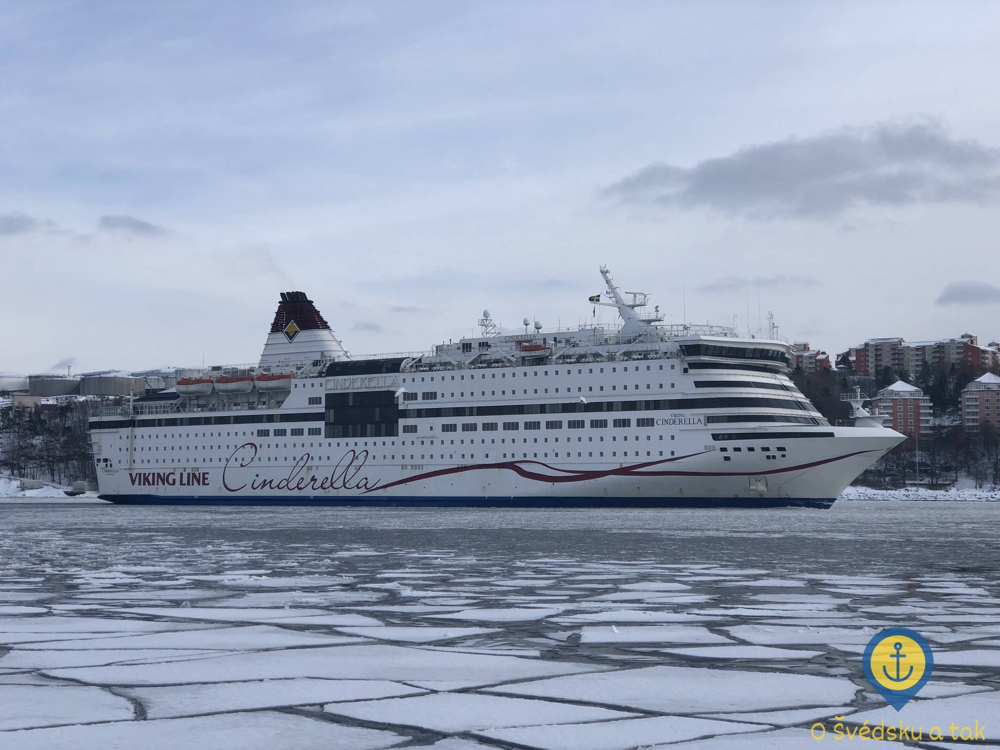 Trajektům led rozhodně problém nedělá, na snímku je trajekt Cinderella společnosti Viking Line
Viking Line není jedinou společností, která okružní plavby po Baltu provozuje. Můžete se podívat i na nabídky společností Tallink & Silja Line a Birka Line, třeba vás jejich nabídka osloví více.
Lodní zajímavosti ve Stockholmu a okolí
Švédsko má bohatou námořní historii, do které se paradoxně nejvíce zapsala válečná loď Vasa. Loď, která se potopila na své první plavbě v roce 1628. Loď, která ležela 333 let na dně Baltského moře. Loď, která se dnes nachází ve Vasa muzeu, nejnavštěvovanějším muzeu ve Skandinávii. Díky dobrým konzervačním podmínkám na místě jejího odpočinku na dně moře se dochovala ve velice dobrém stavu a to, co uvidíte v muzeu, je tak z 98 % originál. Nedochovaly se bohužel stěžně ani plachty, proto její původní velikost připomínají stěžně na střeše muzea. Je k tomu třeba něco dodávat? To prostě musíte vidět :-)
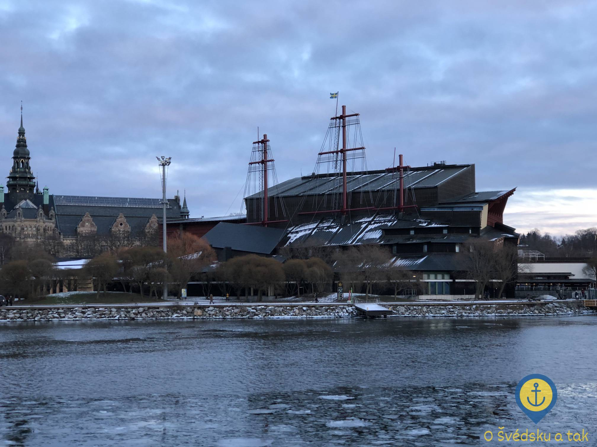 Muzeum Vasa - stěžně na střeše muzea ilustrují někdejší skutečnou velikost válečné lodě Vasa, která se potopila v roce 1628 na své první plavbě kousek za Stockholmem
Díky velmi charakteristické budově muzea jej nemůžete přehlédnout, ať již k plavbě Stockholmem zvolíte kteroukoliv variantu popisovanou v tomto článku.
Z lodi nelze přehlédnout ani druhou obrovskou historickou plachetnici HMS af Chapman z roku 1888, která kotví v centru města. Poté, co dosloužila švédskému námořnictvu, zachránil ji před likvidací Švédský turistický spolek Svenska Turistföreningen a začal ji provozovat jako bostel. V současné době se jedná o jednu z nejlevnějších variant, jak přenocovat v centru města. Kde jinde si tedy nechat zdát sen o všech vašich budoucích plavbách, co říkáte?
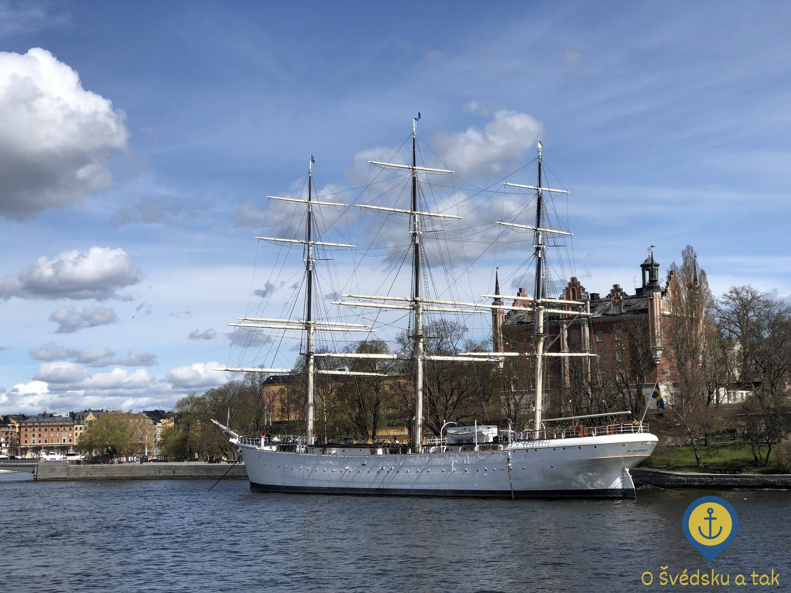 Ve Stockholmu není problém na lodi i přespat – jedním z nejlevnějších hostelů v centru města je HMS af Chapman z roku 1888 provozovaný Švédským turistickým spolkem
Majáky jsou s námořní historií nerozlučně spjaty kvůli své nezastupitelné roli v oblasti navigace. V dřívějších dobách v nich působili strážci majáků, kteří měli za úkol udržovat signalizační ohně. V druhé polovině dvacátého století však postupně docházelo k jejich automatizaci. Jeden z takových, dnes již plně automatických majáků, opět nelze při plavbě Stockholmem přehlédnout.
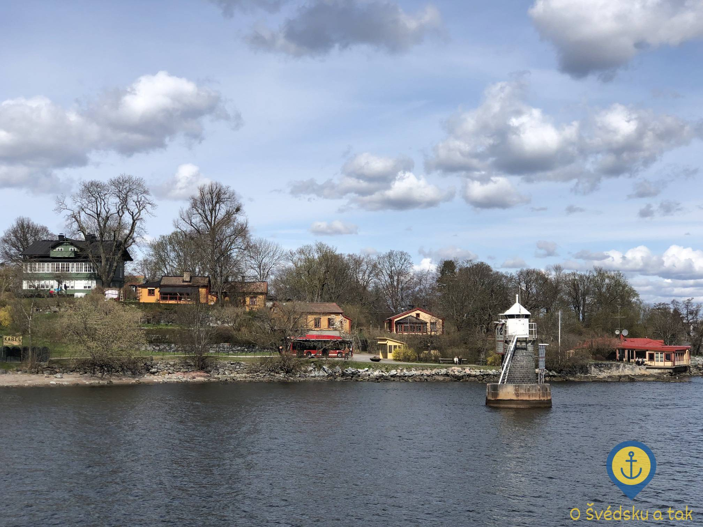 Automatický maják u východního cípu ostrova Djurgården
O automatizaci majáků se zmiňuji i z dalšího důvodu – průvodkyně nám během Stockholm Winter Tour vyprávěla o tom, že o první automatizaci majáku se zasadili právě vynalézaví Švédové. Mi se zatím tuto informaci nepovedlo nikde ověřit, takže zůstává otázkou, jestli je to skutečně pravda. Pokud o tomto tématu něco víte, budu rozhodně rád, když se se mnou podělíte v komentářích. No a pokud ne a zajímá vás, kde je pravda, nejspíše vám nezbývá nic jiného, než se do Stockholmu vydat v zimě, pořádně promrznout na venkovní palubě a poté se slečny průvodkyně zeptat :-)
Tak na co ještě čekáte? Hurá do Stockholmu a ahoj na palubě!